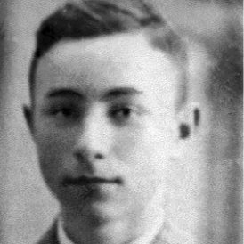

Portrait d’archive
Enfants Sundelowitz
Arnold SUNDELOWITZ
Arnold SUNDELOWITZ est né le 28/06/1924 à Mutterstadt en Allemagne.
Rassemblé à Vénissieux, il est déporté à Auschwitz le 02/09/1942 par le convoi n°27.
Dernière adresse connue : Ardèche
Nom : SUNDELOWITZ
Prénom(s) : Arnold, Abraham
Date naissance : 28/06/1924
Âge (ans) : 18
Lieu naissance : Mutterstadt
Pays ou département : Allemagne
Lieu rassemblement : Vénissieux
Dernière adresse :
Ville : Ardèche
Code postal :
N° Convoi : 27
Date déportation : 02/09/1942
Informations diverses : Arnold (Abraham) est le fils de Leo et Johanna Sundelowitz (née DELLHEIM le 29/06/1891 à Mutterstadt) et le frère de Irmgard (née le 28/08/1922 à Mutterstadt) et le frère jumeau de Siegbert (Elias Hirsch, né le 28/06/1924 à Mutterstadt, Allemagne). Ils étaient tous originaires de Mutterstadt en Allemagne, où Léo tenait un magasin de chaussures puis de chapeaux. En octobre 1940, Leo Sundelowitz était sur place en tant que gardien de la synagogue lorsqu'elle a été incendiée la nuit du pogrom. Il a été insulté et sauvagement battu par un groupe d'environ cinq personnes.
En octobre 1940, la famille - volontairement, ainsi que les autres citoyens de confession juive - furent transférés à Gurs : « Lors de l'évacuation des Juifs le 22 octobre 1940, le Juif mentionné ci-dessus [Leo Sundelowitz] s'est joint à sa femme , 2 fils et 1 fille volontairement”. Arnold sera interné au camp de Gurs le 22/10/1940 puis de Rivesaltes le 10/03/1942. Réfugié en Ardèche, Arnold (et Siegbert) est arrêté et interné au camp de Vénissieux. Transférés à Drancy, ils sont déportés à Auschwitz le 02/09/1942 par le convoi n°27. Les jumeaux sont transférés au camp de Groß-Rosen et y moururent : Arnold le 26 avril 1944 et Siegbert le 19 mai 1944 (Source: Stolpersteine).
Sa mère et sa soeur sont internées au camp de Rivesaltes et déportées à Auschwitz le 11/09/1942 par le convoi n°31. Irmgard est assassinée le 20 octobre 1942.
Leo Sundelowitz le père est libéré à Saint-Laurent le 20/08/1944 et revient à Mutterstadt, au 30 Rheingönheimer Str., en décembre 1946. En 1950, il épouse Hélène Forster et décède le 28 mars 1953 à Ludwigshafen.
Sundelowitz (Arnold), né le 28 juin 1924 à Mutterstadt (Allemagne), décédé le 26 avril 1944 à Fuenfteichen – Kommando de Gross Rosen (Allemagne).
Sundelowitz, née Dellheim (Johanna) le 29 juin 1891 à Mutterstadt (Allemagne), décédée le 16 septembre 1942 à Auschwitz (Pologne). Sundelowitz (Siegbert), né le 28 juin 1924 à Mutterstadt (Allemagne), décédé le 19 mai 1944 à Fuenfteichen – Kommando de Gross Rosen (Allemagne).
Lieu de déportation : Auschwitz
Lieu de départ : Lyon
Nombre total de déporté·e·s du convoi : 430
Gazé·e·s à l'arrivée : 128 (29,8 %)
Survivant·e·s en 1945 : 36 (8,4 %)
Siegbert SUNDELOWITZ
Siegbert SUNDELOWITZ est né le 28/06/1924 à Mutterstadt en Allemagne.
Rassemblé à Vénissieux, il est déporté à Auschwitz le 02/09/1942 par le convoi n°27.
Dernière adresse connue : Ardèche
Nom : SUNDELOWITZ
Prénom(s) : Siegbert Elias Hirsch
Date naissance : 28/06/1924
Âge (ans) : 18
Lieu naissance : Mutterstadt
Pays ou département : Allemagne
Lieu rassemblement : Vénissieux
Dernière adresse :
Ville : Ardèche
Code postal :
N° Convoi : 27
Date déportation : 02/09/1942
Informations diverses : Siegbert (Elias Hirsch) est le fils de Leo et Johanna Sundelowitz (née DELLHEIM le 29/06/1891 à Mutterstadt) et le frère de Irmgard (née le 28/08/1922 à Mutterstadt) et le frère jumeau de Arnold (Abraham). Ils étaient tous originaires de Mutterstadt en Allemagne, où Léo tenait un magasin de chaussures puis de chapeaux. En octobre 1940, Leo Sundelowitz était sur place en tant que gardien de la synagogue lorsqu'elle a été incendiée la nuit du pogrom. Il a été insulté et sauvagement battu par un groupe d'environ cinq personnes.
En octobre 1940, la famille - volontairement, ainsi que les autres citoyens de confession juive - furent transférés à Gurs : « Lors de l'évacuation des Juifs le 22 octobre 1940, le Juif mentionné ci-dessus [Leo Sundelowitz] s'est joint à sa femme , 2 fils et 1 fille volontairement”. Arnold sera interné au camp de Gurs le 22/10/1940 puis de Rivesaltes le 10/03/1942. Réfugié en Ardèche, Arnold (et Siegbert) est arrêté et interné au camp de Vénissieux. Transférés à Drancy, ils sont déportés à Auschwitz le 02/09/1942 par le convoi n°27. Les jumeaux sont transférés au camp de Groß-Rosen et y moururent : Arnold le 26 avril 1944 et Siegbert le 19 mai 1944 (Source: Stolpersteine).
Sa mère et sa soeur sont internées au camp de Rivesaltes et déportées à Auschwitz le 11/09/1942 par le convoi n°31. Irmgard est assassinée le 20 octobre 1942.
Leo Sundelowitz le père est libéré à Saint-Laurent le 20/08/1944 et revient à Mutterstadt, au 30 Rheingönheimer Str., en décembre 1946. En 1950, il épouse Hélène Forster et décède le 28 mars 1953 à Ludwigshafen.
Sundelowitz (Arnold), né le 28 juin 1924 à Mutterstadt (Allemagne), décédé le 26 avril 1944 à Fuenfteichen – Kommando de Gross Rosen (Allemagne).
Sundelowitz, née Dellheim (Johanna) le 29 juin 1891 à Mutterstadt (Allemagne), décédée le 16 septembre 1942 à Auschwitz (Pologne). Sundelowitz (Siegbert), né le 28 juin 1924 à Mutterstadt (Allemagne), décédé le 19 mai 1944 à Fuenfteichen – Kommando de Gross Rosen (Allemagne).
Lieu de déportation : Auschwitz
Lieu de départ : Lyon
Nombre total de déporté·e·s du convoi : 430
Gazé·e·s à l'arrivée : 128 (29,8 %)
Survivant·e·s en 1945 : 36 (8,4 %)